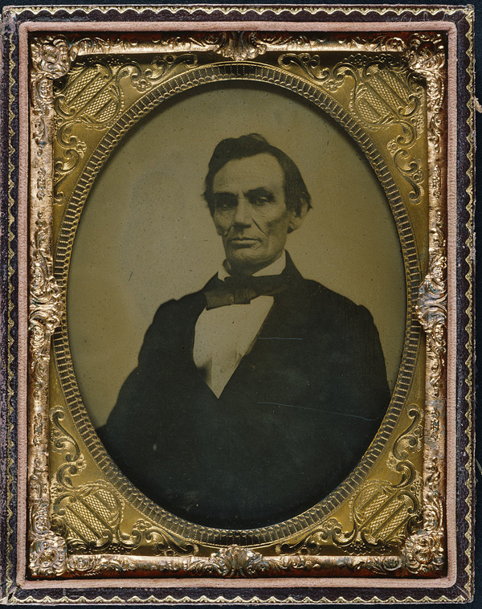

Directions: Fill in the chart as we study each part of the lesson. Keep this page in your notebook. You will use it again on the review day before the unit test.

| Part of the lesson | What happened | What it settled, or failed to settle | Who acted, and on what claim |
|---|---|---|---|
| The debates, 1858 | |||
| Freeport | |||
| The racial ground | |||
| The raid and the trial | |||
| Secession in its own words |
The break in one paragraph. Using at least three rows of the chart, write a paragraph that answers the lesson question. How did the argument of 1858 become the break of 1860 and 1861?
| Part of the lesson | What happened | What it settled, or failed to settle | Who acted, and on what claim |
|---|---|---|---|
| The debates, 1858 | Seven open air debates across Illinois, three hours each before crowds in the tens of thousands, between Lincoln and Douglas in the Senate campaign. | They settled nothing and fixed everything: the terms on which the slavery argument would be fought, and Lincoln's standing as a national figure. | Lincoln, pressing containment; Douglas, defending popular sovereignty on white supremacist ground. |
| Freeport | Lincoln asked whether a territory could keep slavery out after Dred Scott. Douglas answered that it could, by refusing the local police laws slavery needed to survive. | It saved Douglas's Senate seat and forfeited the South, whose leaders demanded the federal slave code the doctrine denied. | Douglas, answering for Illinois voters; southern leaders, answering for the slave states. |
| The racial ground | At Charleston, Lincoln disavowed social and political equality and favored the superior position for the white race. At Peoria he had held slavery a moral, social, and political wrong whose spread must stop. | Both positions stood in one campaign, one limiting containment's promise, the other setting the policy the South refused. | Lincoln, holding both; Douglas, charging that Lincoln preached the equality Lincoln disavowed. |
| The raid and the trial | Brown and twenty one men, five of them Black, seized the Harpers Ferry arsenal on October 16, 1859. Marines under Lee stormed the engine house on October 18. Brown spoke on November 2 and was hanged December 2. | The raid freed no one and settled the sections' pictures of each other: a martyr in the North, invasion in the South. | Brown, acting on God's law as he read it; Virginia, trying him for treason; the sections, judging him oppositely. |
| Secession in its own words | The Democracy split over the slave code. Lincoln won with 39.8 percent and no southern state. South Carolina seceded on December 20, 1860; the Crittenden Compromise failed; the Confederate States organized at Montgomery. | Departure replaced argument. The seceding states stated their ground themselves: the compact broken over fugitives, and slavery named as the cornerstone. | South Carolina's convention; Crittenden, offering the last terms; Davis and Stephens, founding and explaining the Confederacy. |
The break in one paragraph. Strong answers run the chart as one chain: Freeport split the Democracy over the slave code, Brown's raid taught each section to fear the other, and Lincoln's election on 39.8 percent was answered with departure, defended in their own declarations.